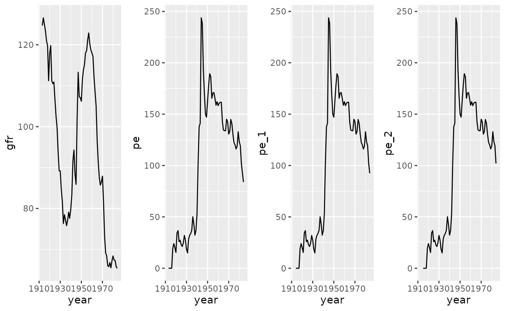
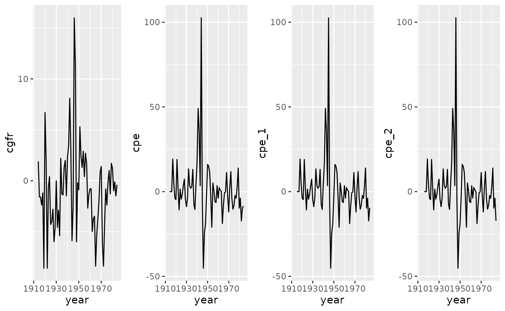

Application_Fertility_lagged.Rmd
rmarkdown::render("exercises.Rmd",output_format=rmarkdown::html_notebook(css="css/OFF.css"),output_file="exercises.Rmd")
# Loading data
#rm(list=ls())
library(sandwich)
library(lmtest)
library(wooldridge)
library(ggplot2)
library(plotly)
fertility_rdgp <- fertil3 # Realized DGPFrom 1913 to 1984
Model specification 1: \[\begin{equation} gfr_{t} = \alpha_{0} + \delta_{0}pe_{t} + \delta_{1}pe_{t-1} + \delta_{2}pe_{t-1} + u_{t}, t=1,2,...,n \end{equation}\]
model_ferd <- lm(fertility_rdgp$gfr ~ fertility_rdgp$pe+ fertility_rdgp$pe_1+fertility_rdgp$pe_2)Model specification 2: \[\begin{equation} \Delta gfr_{t} = \alpha_{0} + \delta_{0}\Delta pe_{t} + \delta_{1}\Delta pe_{t-1} + \delta_{2}\Delta pe_{t-1} + u_{t}, t=1,2,...,n \end{equation}\]
model_ferdc <- lm(fertility_rdgp$cgfr ~ fertility_rdgp$cpe +fertility_rdgp$cpe_1+fertility_rdgp$cpe_2)Model specification 1:
p1 <- ggplot2::ggplot(data=fertility_rdgp) + ggplot2::geom_line(aes(x=year,y=gfr))
p2 <- ggplot2::ggplot(data=fertility_rdgp) + ggplot2::geom_line(aes(x=year,y=pe))
p3 <- ggplot2::ggplot(data=fertility_rdgp) + ggplot2::geom_line(aes(x=year,y=pe_1))
p4 <- ggplot2::ggplot(data=fertility_rdgp) + ggplot2::geom_line(aes(x=year,y=pe_2))
gridExtra::grid.arrange(p1, p2, p3, p4,nrow = 1)## Warning: Removed 1 row(s) containing missing values (geom_path).## Warning: Removed 2 row(s) containing missing values (geom_path). Model specification 2:
cp1 <- ggplot2::ggplot(data=fertility_rdgp) + ggplot2::geom_line(aes(x=year,y=cgfr))
cp2 <- ggplot2::ggplot(data=fertility_rdgp) + ggplot2::geom_line(aes(x=year,y=cpe))
cp3 <- ggplot2::ggplot(data=fertility_rdgp) + ggplot2::geom_line(aes(x=year,y=cpe_1))
cp4 <- ggplot2::ggplot(data=fertility_rdgp) + ggplot2::geom_line(aes(x=year,y=cpe_2))
gridExtra::grid.arrange(cp1, cp2, cp3, cp4,nrow = 1)## Warning: Removed 1 row(s) containing missing values (geom_path).
## Warning: Removed 1 row(s) containing missing values (geom_path).## Warning: Removed 2 row(s) containing missing values (geom_path).## Warning: Removed 3 row(s) containing missing values (geom_path).
Option 1: t-test AR(1) on model 1
## Serial correlation with strictly exogenous regressors
#### Step 1: Find the estimated residual
resval <- model_ferd$res
#### Step 2: Estimat the estimated residual on itself
model_ar <- lm(resval~lag(resval))
#### Step 3: Show the results from the estimation
summary(model_ar)## Warning in summary.lm(model_ar): essentially perfect fit: summary may be
## unreliable##
## Call:
## lm(formula = resval ~ lag(resval))
##
## Residuals:
## Min 1Q Median 3Q Max
## -9.491e-15 -1.797e-15 -8.750e-16 1.960e-16 5.490e-14
##
## Coefficients:
## Estimate Std. Error t value Pr(>|t|)
## (Intercept) -1.509e-30 8.345e-16 0.000e+00 1
## lag(resval) 1.000e+00 4.344e-17 2.302e+16 <2e-16 ***
## ---
## Signif. codes: 0 '***' 0.001 '**' 0.01 '*' 0.05 '.' 0.1 ' ' 1
##
## Residual standard error: 6.982e-15 on 68 degrees of freedom
## Multiple R-squared: 1, Adjusted R-squared: 1
## F-statistic: 5.299e+32 on 1 and 68 DF, p-value: < 2.2e-16Option 2: Testing for serial correlation with general regressors on model 1
## Perform Breusch-Godfrey test for first-order serial correlation:
bgtest(fertility_rdgp$gfr ~ fertility_rdgp$pe_1+fertility_rdgp$pe_2)##
## Breusch-Godfrey test for serial correlation of order up to 1
##
## data: fertility_rdgp$gfr ~ fertility_rdgp$pe_1 + fertility_rdgp$pe_2
## LM test = 64.287, df = 1, p-value = 1.076e-15
summary(model_ferdc, robust=FALSE)##
## Call:
## lm(formula = fertility_rdgp$cgfr ~ fertility_rdgp$cpe + fertility_rdgp$cpe_1 +
## fertility_rdgp$cpe_2)
##
## Residuals:
## Min 1Q Median 3Q Max
## -9.8307 -2.1842 -0.1912 1.8442 11.4506
##
## Coefficients:
## Estimate Std. Error t value Pr(>|t|)
## (Intercept) -0.96368 0.46776 -2.060 0.04339 *
## fertility_rdgp$cpe -0.03620 0.02677 -1.352 0.18101
## fertility_rdgp$cpe_1 -0.01397 0.02755 -0.507 0.61385
## fertility_rdgp$cpe_2 0.10999 0.02688 4.092 0.00012 ***
## ---
## Signif. codes: 0 '***' 0.001 '**' 0.01 '*' 0.05 '.' 0.1 ' ' 1
##
## Residual standard error: 3.859 on 65 degrees of freedom
## (3 observations deleted due to missingness)
## Multiple R-squared: 0.2325, Adjusted R-squared: 0.1971
## F-statistic: 6.563 on 3 and 65 DF, p-value: 0.0006054##
## t test of coefficients:
##
## Estimate Std. Error t value Pr(>|t|)
## (Intercept) -0.963679 0.450703 -2.1382 0.03627 *
## fertility_rdgp$cpe -0.036202 0.033268 -1.0882 0.28053
## fertility_rdgp$cpe_1 -0.013971 0.032601 -0.4285 0.66968
## fertility_rdgp$cpe_2 0.109990 0.026082 4.2171 7.816e-05 ***
## ---
## Signif. codes: 0 '***' 0.001 '**' 0.01 '*' 0.05 '.' 0.1 ' ' 1